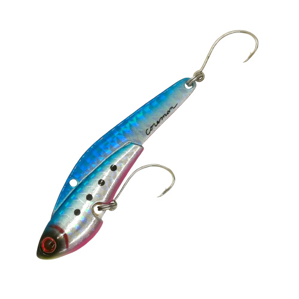
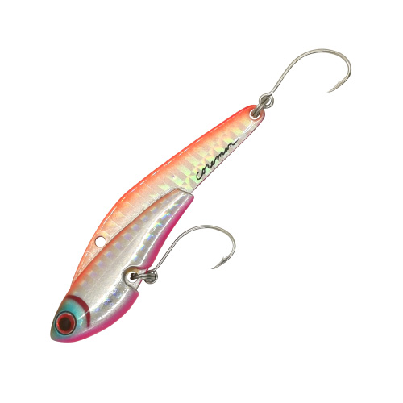
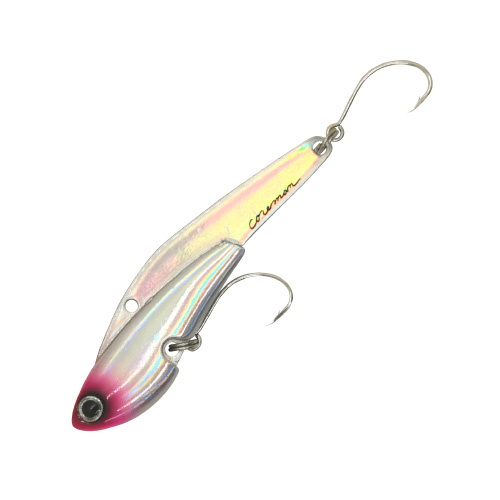
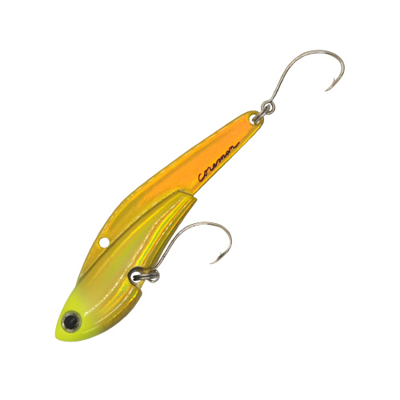

アイアンプレートSC IP-26
（IP-26 IRONPLATE SC）
アイアンプレートSC IP-26（IP-26 IRONPLATE SC）はCOREMAN（コアマン）の鉄板バイブレーションです。
「鉄板バイブにシングルフック！実はこれが相性抜群だったのです」。元祖シーバス専用鉄板バイブ、アイアンプレートをシングルフック「シルバークロー」装着で純粋進化させたSCシリーズの26gモデルです。トレブルフックよりバラシが減り、キャッチ率が上がるのが最大の魅力です。

画像出典:コアマン公式HP
スペック
- メーカー
- COREMAN（コアマン）
- タイプ
- 鉄板バイブレーション（メタルバイブ）
- 全長
- 75mm
- 自重
- 26g
- フック
- フックラボ シルバークロー SC-M #2
- リング
- コアマン オリジナル #3
- スナップ
- コアマン スナップ #1
- カラー
- 全8色
- ターゲット
- シーバス
- 価格
- 1,400円（税別）
▼今すぐチェック

アイアンプレートSC IP-26の特徴
鉄板バイブ×シングルフックという「ニュースタンダード」を作ったアイアンプレート
-
元祖シーバス専用鉄板バイブの純粋進化
シーバスのデイゲームで鉄板バイブを定番にしたアイアンプレートを、シングルフック仕様にアップデート。扱いやすさはそのままに、釣れる確率を高めたモデルだ。
-
口に入りやすいシングルフック「シルバークロー」
標準装備のシルバークローは、口の中に入りやすい形状で、良いところにがっつりフッキングする。トレブルフックに比べてバラシが減り、キャッチ率もアップする。
-
シリーズ中でも使いやすい26g
IP-26は75mm・26g。遠投して広く探れる重さで、シーバスロッドで扱いやすいSCシリーズの中心サイズだ。専用ロッドのデイスター CDS96ML-CS もこのIP-26を使いたおすために作られている。
アイアンプレートSC IP-26の使い方
基本はただ巻き。遠投して着底させたら、ボトム付近から中層をただ巻きで引いてくる。鉄板バイブらしい強い振動で広範囲の魚に気づかせ、リアクションで食わせるのが持ち味だ。
反応がなければ、巻き速度やレンジを変えたり、リフト＆フォールで誘ったりと変化をつけていこう。シングルフックなので根掛かりしにくく、ボトム付近も攻めやすいです。
アイアンプレートSC IP-26の得意な状況
夏〜秋のデイゲームで、河口・港湾・干潟などの広いエリアを遠投して探る状況が最大の出番。
ベイトが散っていて魚の居場所が絞れない時に、飛距離と強い波動で広く探るサーチベイトとして選びたい1本です。
ワンポイント
フックが甘くなったら、交換用のシルバークロー（SC-M #2）に替えると新品の刺さりに戻せます。
浅い場所や根の多い場所ではIP-13、より遠投したい時や深い場所ではIP-26と、サイズで使い分けると組み立てやすくなります。
アイアンプレートSCシリーズの使い分け
| モデル | 全長／自重 | 得意な場面 |
|---|---|---|
| IP-13 SC | 60mm／13g | 小さめのベイト・浅い場所や近距離（フック SC-M #4） |
| IP-18 レアメタルSC | 75mm／18g | 26gより軽く、ゆっくり見せたい時（フック SC-M #2） |
| IP-26 SC | 75mm／26g | 遠投で広範囲を探るシリーズの中心サイズ（本記事のモデル） |
アイアンプレートSCはIP-13・IP-18・IP-26の3モデル。ほかに、レンジを使い分けられる「HIGH&LOW」シリーズもラインナップされている。
オススメカラー
IP-26 アイアンプレートSCは全8色展開。シーバスのデイゲームでオススメのカラーを厳選して紹介します。

#001 マコイワシイワシを模したナチュラル系。まず1色ならここから。

#004 イズミジャイアンコアマン代表・泉裕文さんの名を冠した定番カラー。

#003 ピンクヘッド見やすいピンクのヘッドで、濁りやローライトにも。

#007 チャートヘッドチャートのヘッドで目立たせたい時のアピールカラー。
画像出典:コアマン公式HP
アイアンプレートSC IP-26に似ているルアー
-
 VJ-16
コアマン
詳細はこちら＞
VJ-16
コアマン
詳細はこちら＞
コアマンのもう1つの定番、バイブレーションジグヘッド。表層〜中層をゆっくり見せたい時は、鉄板バイブよりVJが向いている。
-
 鉄PANバイブ
ジャクソン
詳細はこちら＞
鉄PANバイブ
ジャクソン
詳細はこちら＞
同じ鉄板バイブの定番。飛距離と強い波動で広く探るという役割が重なる。
-
 パワーブレード PB-20
コアマン
詳細はこちら＞
パワーブレード PB-20
コアマン
詳細はこちら＞
ブレードのフラッシングで誘うブレードベイト。鉄板バイブに反応しない時の持ち替え先に。